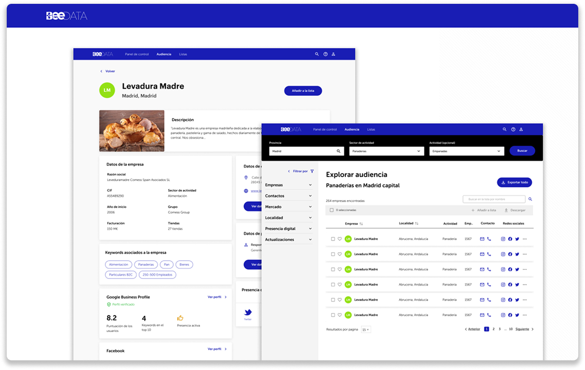
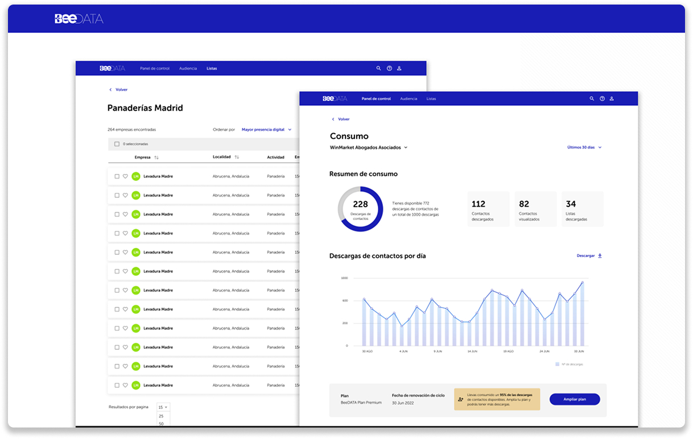
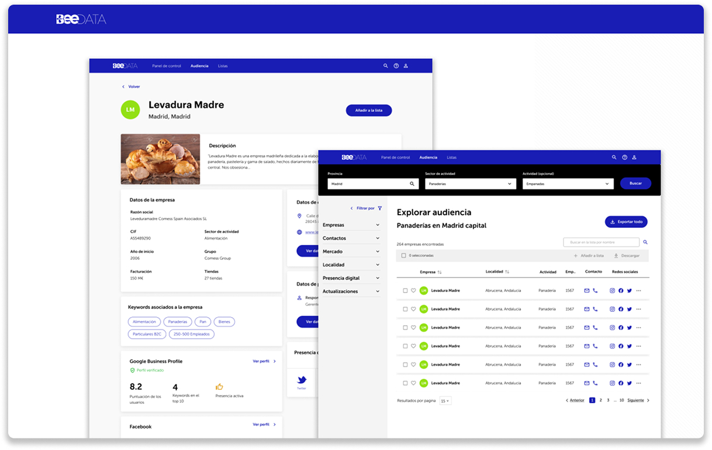
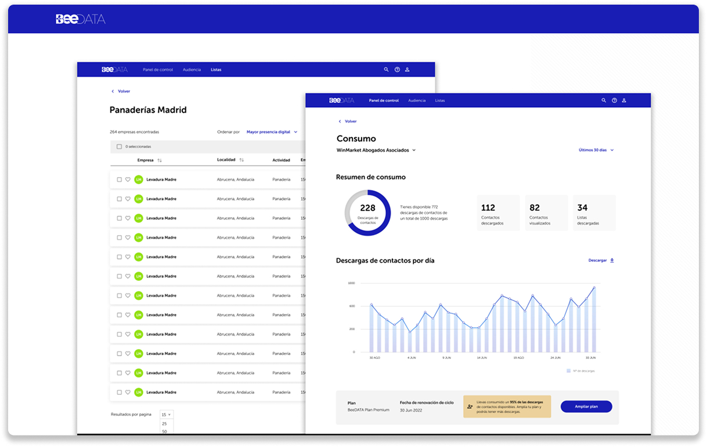

BeeData
BeeData is a B2B database service that set out to be perceived as higher value than “just data”. The goal was to promote a relationship model with customers, using AI as a guide for how businesses evolve, not just what they download.
The Challenge
The hard part was making a powerful analytics product usable for non-technical teams. We had to move beyond “search → download” into an AI-guided relationship model—reducing time-to-value and helping users act on insights without getting lost in dashboards.
The Solution
Through a common project that generated synergy across analytics, visualization, and AI capabilities on BeeDigital data, we built a scalable foundation across BeeData and BeeData Insights.
We developed the components and modules needed for subscription management and service calls that enable users to access and download the right data at the right time. This translated into functional dashboards that helped users consume, interpret, and visualize data without needing to be data experts.
Dashboards
A series of functional dashboards that made data consumption and visualization clear, actionable, and scalable across the product suite.
 



Impact
By aligning BeeData and BeeData Insights around a shared set of modules and dashboards, the product moved from “download data” to “understand and act on data”. That shift supported stronger engagement and measurable business outcomes.